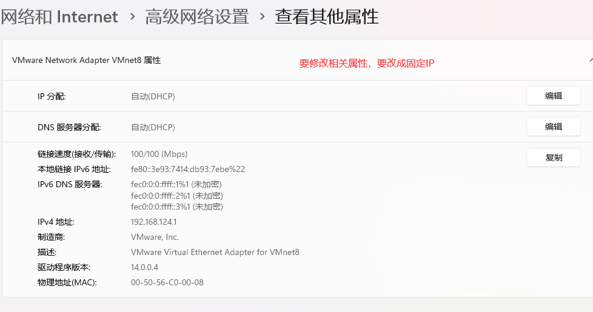

总结
先要理解几个概念：
宿主机的ip地址就是其真实的地址
VMnet8作为虚拟网络适配器，具有自己的IP地址配置，用于在虚拟机与宿主机之间以及虚拟机与外部网络之间建立通信
在NAT模式下，虚拟机的IP地址通常与VMnet8的IP地址处于同一个网段。
这是因为NAT模式的工作原理要求虚拟机发出的数据包首先发送到NAT设备（在VMware中通常是vmnet8虚拟交换机），然后NAT设备将这些数据包的源IP地址转换为宿主机的IP地址（如果目标是外部网络的话）。为了实现这一过程，虚拟机和NAT设备（VMnet8）需要能够相互通信，这通常意味着它们必须位于相同的网络段内。
网络配置的步骤：
设置虚拟机的网络（虚拟网络编辑器）：对于首次配置虚拟机ip，ip是多少，是自己决定的。因为VMnet8的IP地址是由虚拟机分配的。
- 子网IP
- DHCP设置
- NAT设置
- 不要忘记勾选两个选项
- **将主机虚拟适配器连接到此网络(V)**（没勾选这个，不会有VMnet8）
- 使用本地 DHCP 服务将 P 地址分配给虚拟机(D)
配置Linux的静态网络
vim /etc/sysconfig/network-scripts/ifcfg-ens33粘贴以下内容：
TYPE="Ethernet" PROXY_METHOD="none" BROWSER_ONLY="no" BOOTPROTO="static" DEFROUTE="yes" IPV4_FAILURE_FATAL="no" 33" ONBOOT="yes"PADDR=192.168.124.188 NETMASK=255.255.255.0 #网关和DNS服务器 GATEWAY=192.168.124.2 DNS1=8.8.8.8 DNS2=114.114.114.114 #IP地址的前24为代表网络地址，后面是主机地址 IPV6INIT="yes" IPV6_AUTOCONF="yes" IPV6_DEFROUTE="yes" IPV6_FAILURE_FATAL="no" IPV6_ADDR_GEN_MODE="stable-privacy" NAME="ens33" UUID="c6d6aeaf-c564-45a8-95cc-6c8035ce3030" DEVICE="ens33" ONBOOT="yes"- 重启网络
systemctl restart network，如果不行直接重启虚拟机reboot
- 重启网络
配置VMnet8的IP，改成静态。虚拟机的IP地址通常与VMnet8的IP地址处于同一个网段
过程
finalshell下载、安装和连接
安装就是傻瓜安装：选好安装位置，下一步，下一步
新增连接：设置虚拟机的ip地址，设置好用户名和密码
在Linux下，
ifconfig查看虚拟机ip地址双击就可以连接
但是连接失败
修改虚拟机的网络配置
找到虚拟网络编辑器，点击更改配置
选择VMnet8，修改子网IP。当时我的主机IP是172.30.41.xxx
修改DHCP配置：
修改NAT设置

点击确定：
设置Linux的静态IP：
vim /etc/sysconfig/network-scripts/ifcfg-ens33修改配置后，重启网络：
systemctl restart network，但是重启网络遇到问题
解决网络重启的问题：reboot
安装他的提示，运行
systemctl status network.service，查看状态，但是也看不出来看网络说，是 NetworkManager 服务有冲突，直接关闭 NetworkManger 服务就好了，
systemctl stop NetworkManager。但是也没有作用最后直接重启Linux：
reboot，再看查看ip是否设置成功
最后我ping的时候，外网是可以ping通的，但是宿主机无法ping通
主机也无法ping通虚拟机
问题：虚拟机ping通外网，但是无法ping通主机，主机也无法ping通虚拟机
原因是：我的VMnet8没有被启用
启动玩这行之后，查看Windows的ip地址的时候，发现多出两个ip，突然意识到，在网络配置的时候应该是配置VMnet8的ip，而不是自己的Windows的ip。
在NAT模式下，虚拟机上网是通过VMnet8这个虚拟网卡来实现的 。VMnet8相关属性的查看和配置，可以通过下面的途径：
于是，我按照之前的步骤重新配置Linux的网络，ip为192.169.124.188。
重新配置网络后，无法ping外网，而且VMnet8消失了
重新配置网络后，无法ping外网
而且VMnet8的虚拟网卡消失了
ipconfig也不在显示相关网络信息
最后发现是没有勾选相关配置：
于是重新勾选，点击配置，VMnet8重新出现：
把VMnet8的网络配置改成静态
因为之前消失过，所以要从新把VMnet8的网络配置改成静态
以下是具体修改内容：
问题：宿主机可以ping通虚拟机，但是虚拟机无法ping通主机和外网
宿主机可以ping通虚拟机
虚拟机无法ping通主机和外网，但是可以ping通网关（图片的文字是我笔误）
网关配置错误，导致无法ping通外网
最后发现是网关配置错了
修改过后，外网ping通了，但是ping主机的时候，长时间没有反应
VMnet8的ip不是主机ip，真正的主机ip是我们真正的电脑ip
在ping我们真正的电脑ip的时候，ping通了

这是因为在NAT（网络地址转换）模式下，VMnet8的IP并不是宿主机的IP。
另外，我这里的ip地址和前面的不一样是因为我换了地方，重新连接了网络
NAT模式的工作原理
- IP地址转换：NAT模式的核心功能是将虚拟机的内部IP地址转换为宿主机的外部IP地址。当虚拟机尝试访问外部网络时，NAT设备（在VMware中通常是vmnet8虚拟交换机）会捕获这些请求，并将虚拟机的内部IP地址（192.168.124.188）替换为宿主机的外部IP地址（192.168.0.105）。
- 虚拟网络适配器：在NAT模式下，虚拟机会连接到由VMware创建的NAT虚拟网络适配器（通常是VMnet8）。这个适配器在宿主机上作为一个软件桥接器，负责处理虚拟机与外部网络之间的通信。
- DHCP服务：NAT模式下的虚拟机的TCP/IP配置信息是由NAT虚拟网络的DHCP服务器提供的。虚拟机的IP地址通常是在一个私有的、不与物理网络重叠的地址范围内分配的。
VMnet8与宿主机的关系
- VMnet8的IP：VMnet8是VMware为NAT模式创建的虚拟网络适配器，它有自己的IP地址配置，但这个IP地址并不是宿主机的IP地址。VMnet8的IP地址用于在虚拟机与宿主机之间建立通信通道，以及处理虚拟机访问外部网络的请求。
- 宿主机的IP：宿主机的IP地址是其在物理网络中的唯一标识，用于与外部网络进行通信。在NAT模式下，当虚拟机访问外部网络时，其请求会被NAT设备转换为宿主机的IP地址和相应的端口号，从而实现对外部网络的访问
结论
在NAT模式下，VMnet8的IP并不是宿主机的IP。VMnet8作为虚拟网络适配器，具有自己的IP地址配置，用于在虚拟机与宿主机之间以及虚拟机与外部网络之间建立通信。而宿主机的IP地址则是其在物理网络中的唯一标识，用于与外部网络进行通信。
最后连接成功
最后重新修改ip地址：
重新连接成功：
转载请注明来源，欢迎对文章中的引用来源进行考证，欢迎指出任何有错误或不够清晰的表达。可以在下面评论区评论，也可以邮件至 1909773034@qq.com